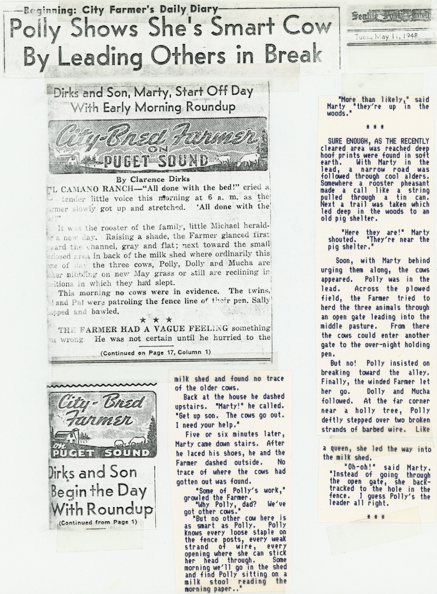
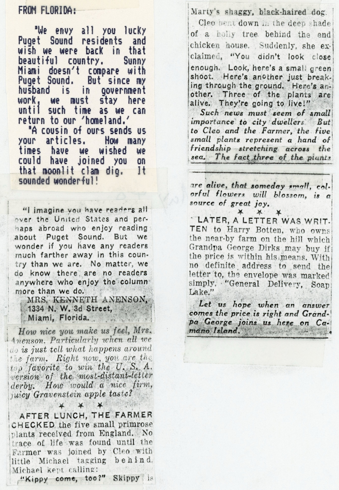
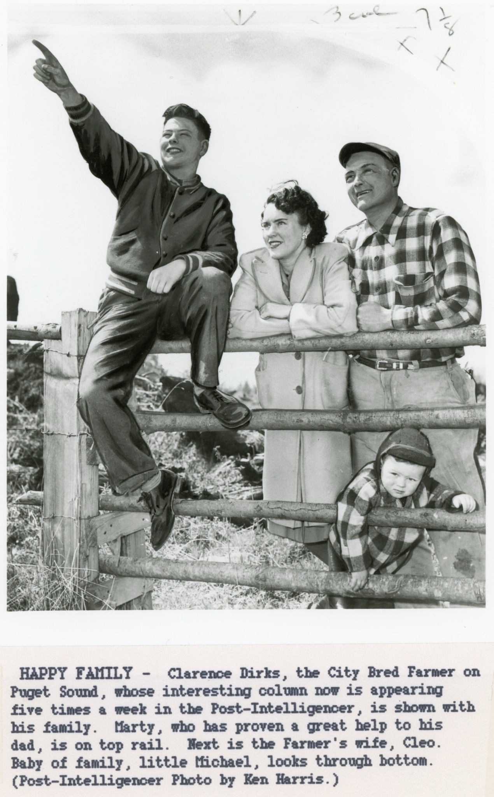
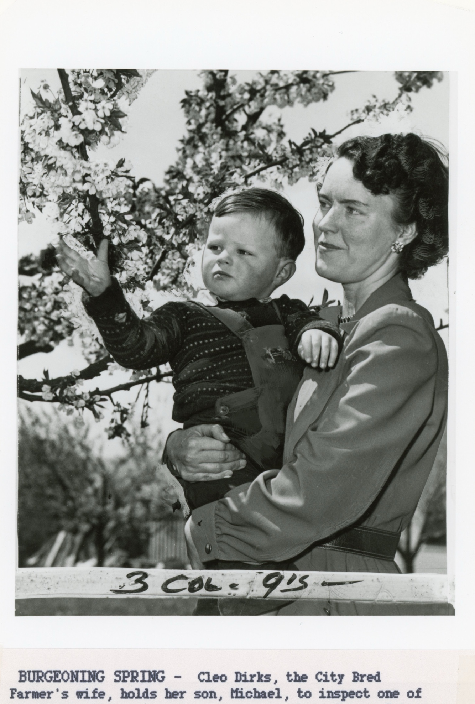
the richly blossoming cherry trees on their Camano Island ranch.
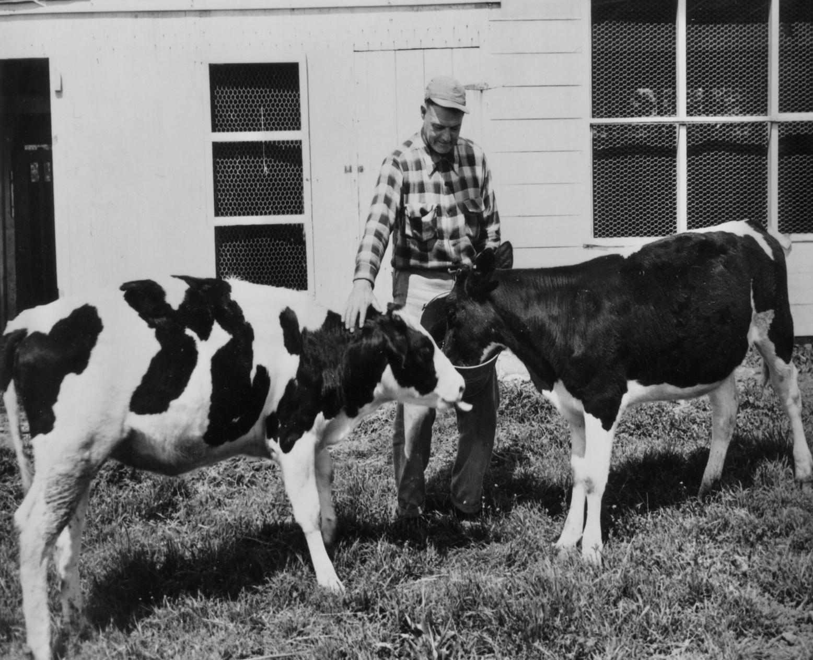
MEAL TIME – The City Bred Farmer is proud of his excellent cattle, and devotes much time to their care. Here two members of the herd, twins called Sal and Pal, get personal attention at meal time.
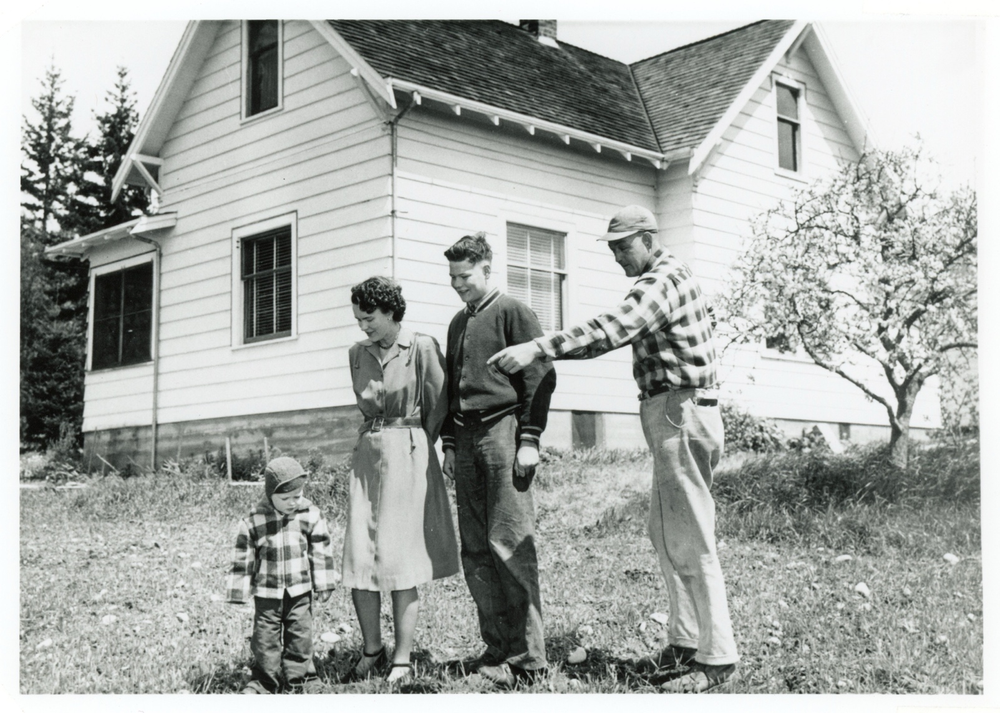The Farmer and family survey the property in front of their second Camano farmstead.
Future farmer Micheal seems fascinated by his own reflection.
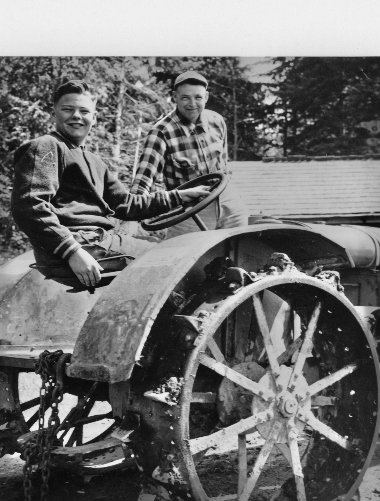
City Bred Farmer Clarence Dirks and son Marty astride their workhorse tractor.
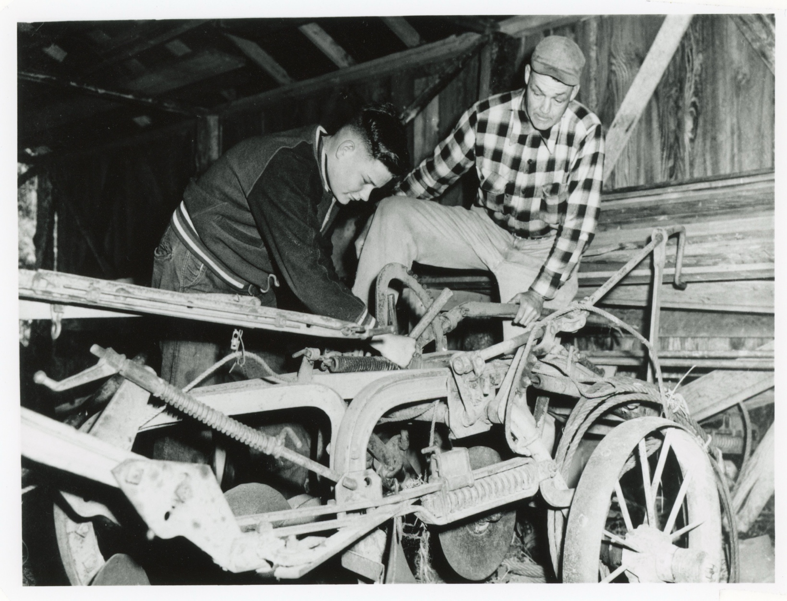
Marty Dirks now takes the lead in the repair and maintenance of farm equipment.
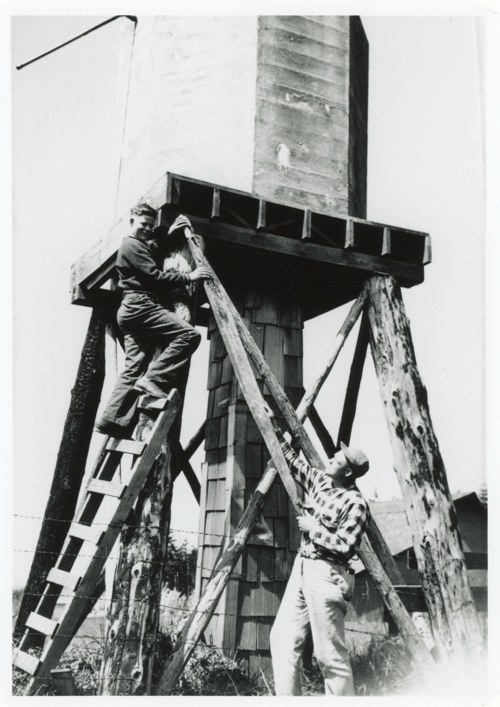
The labors of Hercules pale next to the tasks that constantly confront Farmer Dirks and son Marty.
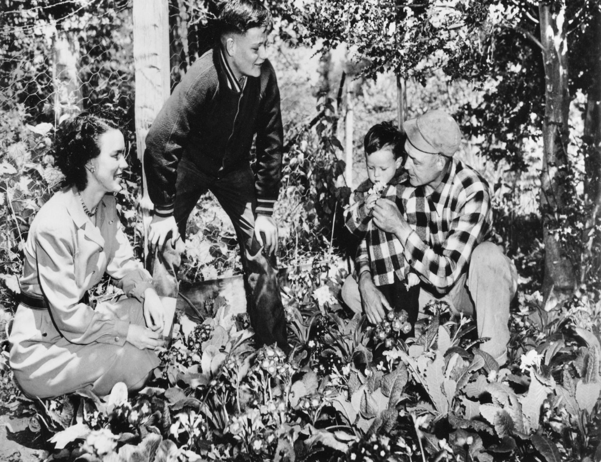
Not just cows, pigs and chickens – The Dirks family is also proud of exotic primroses they raise.
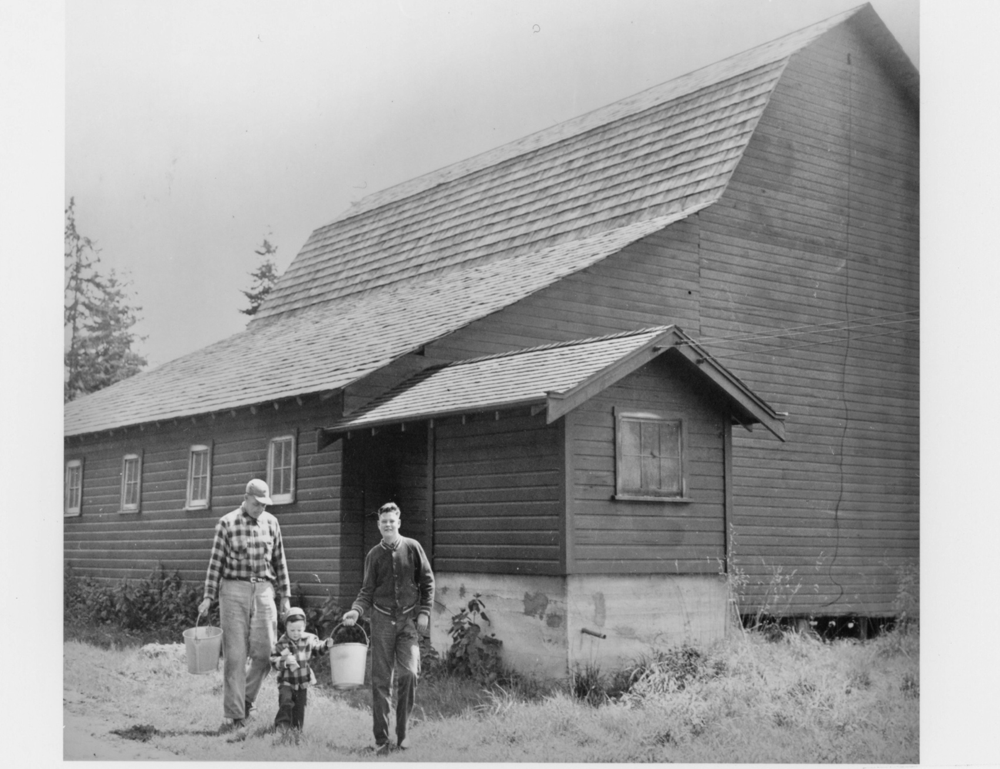
Milking done for another day -- The Dirks menfolk return from the barn.